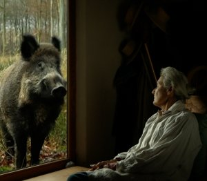

Va, Toto! (Go, Toto!)

Pierre Creton
FR 2017
– 94 min
International Premiere
Prix
Institut Français de la Critique en Ligne
B: Pierre Creton– DOP: Léo Gil Mela – E: Ariane Doublet – E: Michel Bertrou – D: Andolfi, Arnaud Dommerc (JHR Films)
With Pierre Creton, Vincent Barré, Evelyne Didi, Françoise Lebrun
Toto is a young wild boar who has just found a home at Madeleine's.
This pet will be growing in our hearts but so will its paws. Vincent is
especially fond of monkeys whose antics he'll go and see all the way
to India. And poor Joseph is having nightmares caused by the artificial
breathing machine he is forced to use. Pierre is the one who ends up
tying all of these adventures together. (Jean-Pierre Rehm)
sunday 8 oct 11.00 am theatiner filmkunst
Pierre Creton * in 1966, works and lives as filmmaker, sculptor and milk inspector in Vattetot-sur-Mer. He studied sculpture at the Academy of Fine Arts in Paris.
Filme Détour suivi de Jovan from Foula 2005 (2. UX) – L’Arc d’Iris – Souvenir d’un jardin 2006 (, mit V. Barré, 2. UX) – L’heure du Berger 2008 (3. UX) – Sur la voie 2013 – Petit traité de la marche en plaine (mit V. Barré), 2014 – Sur la voie critique 2017 – Va, Toto! 2017